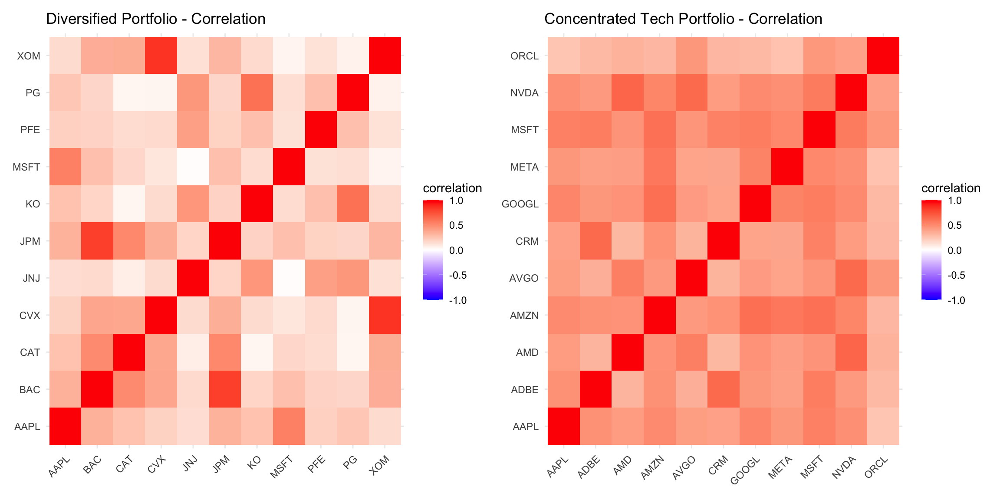
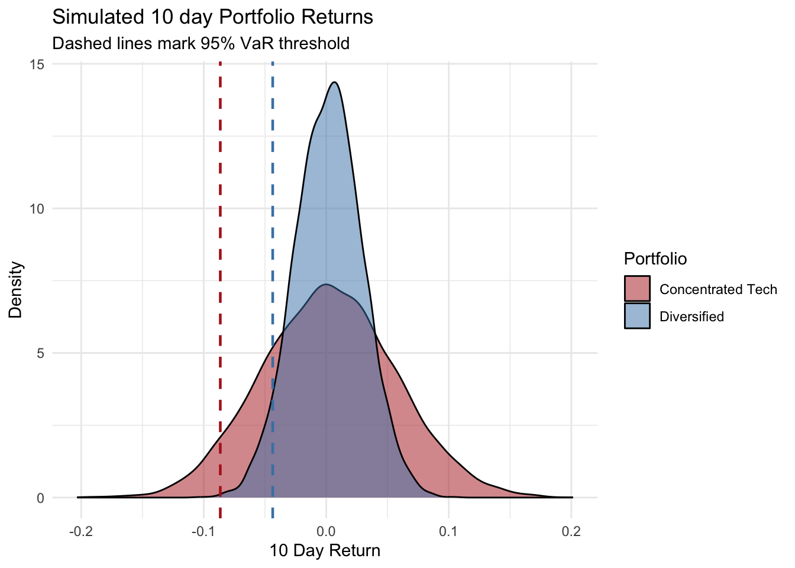

Packages Used
library(tidyverse)
library(ggplot2)
library(tidyquant)
library(patchwork)This report uses Monte Carlo simulation to compare the 10 day Value at Risk and Conditional Value at Risk of a diversified equity portfolio against a concentrated technology portfolio, both equally weighted across 11 large cap stocks. The diversified portfolio’s simulated risk was consistently about half that of the concentrated portfolio, a gap that is consistent with a lower average correlation among its holdings. Results were validated through historical backtesting. Both portolios’ return distributions were found to be leptokurtic, which is a source of tail risk that is not captured by the model’s assumption of normality.
This analysis compares the risk profiles of two equally weighted equity portfolios (containing 11 stocks each) over a five year period from 2021 to 2026. The first portfolio is diversified, containing stocks from a variety of sectors (technology, energy, healthcare, financials, consumer staples, and industrials). The second portfolio is concentrated containing 11 large cap technology stocks. the diversified portfolio exhibited a significantly lower average pairwise correlation between holdings (0.25 compared to 0.45)
library(tidyverse)
library(ggplot2)
library(tidyquant)
library(patchwork)tickers_A <- c("AAPL", "MSFT", "XOM", "CVX", "JNJ", "PFE", "JPM", "BAC", "PG", "KO", "CAT")
tickers_B <- c("AAPL", "MSFT", "NVDA", "GOOGL", "META", "AMZN", "AVGO", "CRM", "ADBE", "ORCL", "AMD")
start_date <- "2021-01-01"
end_date <- "2026-09-07"
portfolio_A <- tq_get(tickers_A,
from = start_date,
to = end_date,
get = "stock.prices")
portfolio_B <- tq_get(tickers_B,
from = start_date,
to = end_date,
get = "stock.prices")
portfolio_A |>
group_by(symbol) |>
summarise(n = n(), n_na = sum(is.na(adjusted)))
portfolio_B |>
group_by(symbol) |>
summarise(n = n(), n_na = sum(is.na(adjusted)))portfolio_A <- portfolio_A |>
group_by(symbol) |>
arrange(date) |>
mutate(daily_return = log(adjusted / lag(adjusted))) |>
ungroup()
portfolio_B <- portfolio_B |>
group_by(symbol) |>
arrange(date) |>
mutate(daily_return = log(adjusted / lag(adjusted))) |>
ungroup()
portfolio_A |>
group_by(symbol) |>
summarise(mean_return=mean(daily_return, na.rm = T),
sd_return=sd(daily_return, na.rm = T),
.groups = "drop")
portfolio_B |>
group_by(symbol) |>
summarise(mean_return=mean(daily_return, na.rm = T),
sd_return=sd(daily_return, na.rm = T),
.groups = "drop")returns_wide_A <- portfolio_A |>
filter(!is.na(daily_return)) |>
select(date, symbol, daily_return) |>
pivot_wider(names_from = symbol, values_from = daily_return)
returns_wide_B <- portfolio_B |>
filter(!is.na(daily_return)) |>
select(date, symbol, daily_return) |>
pivot_wider(names_from = symbol, values_from = daily_return)cor_matrix_A <- cor(returns_wide_A |>
select(-date),
use = "pairwise.complete.obs")
cor_matrix_B <- cor(returns_wide_B |>
select(-date),
use = "pairwise.complete.obs")
cor_matrix_A
cor_matrix_B
avg_cor <- function(mat){
mean(mat[upper.tri(mat)])
}
avg_cor(cor_matrix_A)
avg_cor(cor_matrix_B)
min(cor_matrix_A[upper.tri(cor_matrix_A)])
min(cor_matrix_B[upper.tri(cor_matrix_B)])
max(cor_matrix_A[upper.tri(cor_matrix_A)])
max(cor_matrix_B[upper.tri(cor_matrix_B)])
which(cor_matrix_A == max(cor_matrix_A[upper.tri(cor_matrix_A)]),
arr.ind = TRUE)
which(cor_matrix_B == max(cor_matrix_B[upper.tri(cor_matrix_B)]),
arr.ind = TRUE)
plot_corr_heatmap <- function(cor_matrix, title){
cor_df <- as.data.frame(cor_matrix) |>
mutate(symbol1 = rownames(cor_matrix)) |>
pivot_longer(-symbol1, names_to = "symbol2",
values_to = "correlation")
ggplot(cor_df, aes(x = symbol1, y = symbol2,
fill = correlation))+
geom_tile()+
scale_fill_gradient2(low = "blue", mid = "white",
high = "red", midpoint = 0,
limits = c(-1,1))+
labs(title = title, x = NULL, y = NULL)+
theme_minimal()+
theme(axis.text.x = element_text(angle = 45,
hjust = 1))
}plot_corr_heatmap(cor_matrix_A,
"Diversified Portfolio - Correlation")+
plot_corr_heatmap(cor_matrix_B, "Concentrated Tech Portfolio - Correlation")
library(MASS, exclude = "select")
set.seed(123)
simulate_portfolio_var <- function(returns_wide, n_sims = 10000,
horizon_days,
confidence_levels = c(0.95, 0.99)){
returns_matrix <- returns_wide |>
dplyr::select(-date) |>
as.matrix()
n_assets <- ncol(returns_matrix)
weights <- rep(1/n_assets, n_assets)
mu <- colMeans(returns_matrix, na.rm = T)
sigma <- cov(returns_matrix, use = "pairwise.complete.obs")
simulated_returns <- mvrnorm(n = n_sims, mu = mu, Sigma = sigma)
simulated_portfolio_returns <- simulated_returns %*% weights
simulated_portfolio_returns <- simulated_portfolio_returns * sqrt(horizon_days)
results <- lapply(confidence_levels, function(cl){
var_threshold <- quantile(simulated_portfolio_returns, probs = 1-cl)
cvar <- mean(
simulated_portfolio_returns[simulated_portfolio_returns<=var_threshold])
tibble(confidence = cl, VaR = -var_threshold, CVaR = -cvar)
}) |>
bind_rows()
list(
simulated_returns = simulated_portfolio_returns,
summary = results
)
}
var_results_A <- simulate_portfolio_var(returns_wide_A,
horizon_days = 10)
var_results_B <- simulate_portfolio_var(returns_wide_B,
horizon_days = 10)
var_results_A$summary
var_results_B$summaryhistorical_portfolio_returns_A <- returns_wide_A |>
select(-date) |>
as.matrix() %*% rep(1/11,11)
realized_10d_A <- zoo::rollapply(
historical_portfolio_returns_A,
width = 10,
FUN = sum,
align = "right")
var95_A <- var_results_A$summary$VaR[
var_results_A$summary$confidence == 0.95]
breaches_A <- sum(realized_10d_A < -var95_A)
breaches_rate_A <-breaches_A/length(realized_10d_A)
breaches_rate_A
var_99_A <- var_results_A$summary$VaR[
var_results_A$summary$confidence == 0.99]
breaches_99_A <- sum(realized_10d_A < -var_99_A)
breach_rate_99_A <- breaches_99_A / length(realized_10d_A)
breach_rate_99_A
historical_portfolio_returns_B <- returns_wide_B |>
select(-date) |>
as.matrix() %*% rep(1/11,11)
realized_10d_B <- zoo::rollapply(
historical_portfolio_returns_B,
width = 10,
FUN = sum,
align = "right")
var95_B <- var_results_B$summary$VaR[
var_results_B$summary$confidence == 0.95]
breaches_B <- sum(realized_10d_B < -var95_B)
breaches_rate_B <-breaches_B/length(realized_10d_B)
breaches_rate_B
var_99_B <- var_results_B$summary$VaR[
var_results_B$summary$confidence == 0.99]
breaches_99_B <- sum(realized_10d_B < -var_99_B)
breach_rate_99_B <- breaches_99_B / length(realized_10d_B)
breach_rate_99_B
library(e1071)
kurtosis(historical_portfolio_returns_A)
kurtosis(historical_portfolio_returns_B)sim_df <- bind_rows(
tibble(portfolio = "Diversified", return = as.numeric(
var_results_A$simulated_returns)),
tibble(portfolio = "Concentrated Tech", return = as.numeric(
var_results_B$simulated_returns))
)
var_lines <- bind_rows(
var_results_A$summary |>
mutate(portfolio = "Diversified"),
var_results_B$summary |>
mutate(portfolio = "Concentrated Tech")
)
ggplot(sim_df, aes(x = return, fill = portfolio))+
geom_density(alpha = 0.5)+
geom_vline(data = var_lines |>
filter(confidence == 0.95), aes(xintercept = -VaR,
color = portfolio),
linetype = "dashed", linewidth = 0.8)+
scale_fill_manual(values = c("Diversified" = "steelblue",
"Concentrated Tech" = "firebrick"))+
scale_color_manual(values = c("Diversified" = "steelblue",
"Concentrated Tech" = "firebrick"))+
labs(title = "Simulated 10 day Portfolio Returns",
subtitle = "Dashed lines mark 95% VaR threshold",
x = "10 Day Return", y = "Density", fill = "Portfolio")+
guides(color = "none")+
theme_minimal()